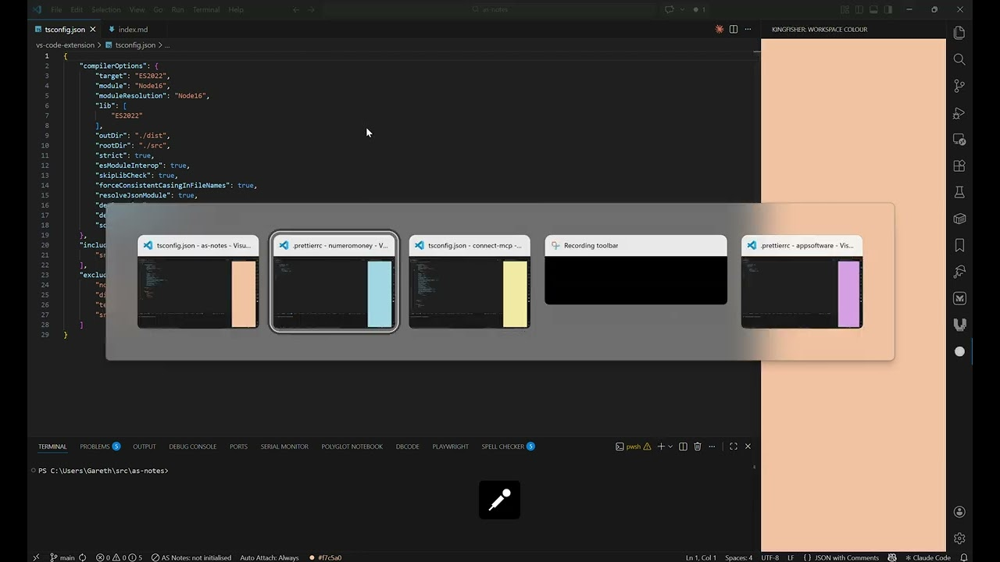

VS Code Kingfisher Extension: Colour Your VS Code Windows Without Breaking Your Team's Settings
Colour Your VS Code Windows Without Breaking Your Team's Settings
VS Code Marketplace | GitHub Repository
If you work across multiple projects simultaneously, you'll know it can get difficult juggling multiple VS Code windows. For example: three VS Code windows open, all wearing the same dark theme, and you spend five seconds squinting at the title bar to figure out which one is your API project and which one is the frontend. It's a small friction, but it adds up.
VS Code Kingfisher Extension Demo (Youtube)

The obvious fix is to colour the title bar — assign each workspace its own colour so you can identify it at a glance. VS Code even has a setting for this: workbench.colorCustomizations. There's even a popular extension that does exactly this called Peacock.
So why build another one?
The Problem With the Existing Approach
Peacock works by writing your chosen colour into .vscode/settings.json — the workspace settings file that lives alongside your code. This works great if you're the only person who ever touches that repository. But most of us aren't.
Teams share .vscode/settings.json. It often gets committed to version control and checked in for everyone. The moment you add your personal hot-pink title bar colour to it, you're either pushing that preference to your colleagues or you're constantly fighting with .gitignore to keep it out. Neither is a great outcome.
This is a known and long-standing issue with Peacock, and it has no clean solution within Peacock's current design — because writing to workspace settings is fundamentally how it works.
A Different Approach
VS Code Kingfisher takes a different approach from the ground up.
Instead of touching .vscode/settings.json, Kingfisher stores your colour choice in VS Code's internal extension storage — globalState, a key-value store that lives outside your project entirely and is never version-controlled. Your colour preference is yours alone. Your team never sees it.
To actually display the colour, Kingfisher still has to write to workbench.colorCustomizations — there's no other VS Code API that controls title bar colour. But it writes to your personal user settings, not the workspace file. Clean separation.
The Trade-off (And How It's Mitigated)
This approach has one unavoidable complication: workbench.colorCustomizations is a global user setting. It applies to all your open VS Code windows simultaneously. If you set window A to blue and window B to green, you can't have both colours active at the same time — the last write wins.
Kingfisher's answer to this is straightforward: apply colour on focus, clear it on blur.
When you switch to a window, Kingfisher writes that window's colour to user settings. When you leave a window, it removes the colour and lets your theme take over. At any given moment, the active window shows its colour; inactive windows revert to the theme default.
Window gains focus → apply this workspace's colour to user settings
Window loses focus → clear colour from user settings
This means you always see the correct colour for whichever window you're actively working in.
The Alt+Tab Problem
There's a secondary problem though. One of the main reasons to colour windows is so you can identify them in Alt+Tab — those small thumbnails that let you switch between applications. If the colour is cleared the moment a window loses focus, the thumbnails all look identical again. We're back to square one.
Kingfisher's solution here is a small but clever workaround: when a window loses focus, Kingfisher automatically opens a sidebar panel that fills its entire height with the workspace colour.
This sidebar panel is rendered by a WebView that belongs to that specific VS Code window — it's not a shared setting, it's local to the window process. Each window maintains its own colour in the sidebar independently. So in Alt+Tab, even though the title bar has reverted to the theme colour, the sidebar is showing the right colour, making each window visually distinct.
Window loses focus → clear title bar colour + open coloured sidebar panel
Window gains focus → restore title bar colour + close sidebar, restore Explorer
When you return to the window, the sidebar closes automatically and Explorer is restored so you're not left staring at the Kingfisher panel.
Using It
Install Kingfisher from the VS Code Marketplace, then open the command palette and run Kingfisher: Set Title Bar Colour. You'll get a menu with:
- A set of hand-picked pastel presets (Rose, Mint, Sky, Periwinkle, and more)
- A native colour picker for precise control
- A custom hex entry field
You can also click the Kingfisher indicator in the status bar to open the same menu. The chosen colour is saved per-workspace, so each project remembers its own setting.
To remove a colour, run Kingfisher: Clear Title Bar Colour.
What Kingfisher Modifies
Kingfisher only touches four workbench.colorCustomizations keys:
titleBar.activeBackgroundtitleBar.activeForegroundtitleBar.inactiveBackgroundtitleBar.inactiveForeground
Foreground colours are calculated automatically using the WCAG 2.x relative luminance formula to ensure readable contrast. The inactive state uses a slightly dimmed version of your chosen colour. Any other customisations you have in place are left completely untouched.
Limitations
- Because the title bar colour is applied globally at the moment of focus, you can't have two windows showing different title bar colours at the same time. The sidebar panel is the mitigation for this.
- On refocus, Kingfisher always restores the Explorer sidebar — VS Code's API doesn't expose which sidebar view was previously open, so there's no way to restore the original view.
- If the sidebar workaround doesn't suit you, or you need true simultaneous per-window title bar colouring, Peacock remains the right tool if your team is happy to commit workspace settings.
Kingfisher is open source on GitHub and available on the VS Code Marketplace. Feedback and contributions welcome.